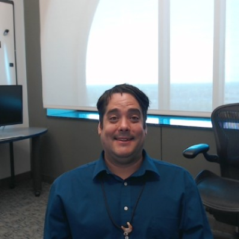

Infrastructure • Networks • Voice • Reliability
Senior IT analyst for infrastructure that has to stay up.
Jordan Smith is a Lansing-based IT professional focused on Linux administration, networking, VoIP, monitoring, firewalls, backups, and user support. He brings practical operational depth to environments that need stable systems, clean handoffs, and dependable recovery.
Senior IT Analyst at Cooley Law School
Lansing, MI
I.T. professional since 2013

Core strengths
Linux administration, networking, general user support, and keeping infrastructure dependable.
Current scope
What Jordan is handling now.
About
Hands-on infrastructure work, grounded in reality.
Jordan has worked across monitoring, restores, systems support, ISP operations, VoIP deployment, and enterprise I.T. administration. The through-line is practical technical execution: diagnosing problems, stabilizing environments, documenting the work, and making systems easier to trust.
His background blends frontline support with deeper infrastructure ownership — from phone systems and firewalls to monitoring stacks, backup validation, and site migrations.
He thrives in environments where uptime, resiliency, and clean execution matter. That includes network monitoring, escalation, voice systems, backup integrity, and the day-to-day technical work that keeps organizations moving.
Technical focus
Built for operations-heavy environments.
Linux Administration
Palo Alto Networks
Cisco routing & switching
Asterisk / FreePBX
VMware vSphere
Nagios XI
Veeam Backup
IPSec tunneling
VoIP / SIP / PRI
Debian 12
SolarWinds
Incident management
Backup validation
Firewall administration
Network uptime & resiliency
Experience
A decade of technical problem solving.
Senior IT Analyst
Primary administrator for Asterisk FreePBX after migration from the Shoretel system. Implemented Nagios XI on Debian 12 to replace PRTG. Supports Palo Alto firewalls, Cisco routing and switching, IPSec site-to-site communication, and Veeam backup operations including tape rotation, validation, and archival practices. Contributed to physical site migration and equipment refresh work.
NOC Engineer 1
Monitored network uptime and resiliency with SolarWinds, coordinated outage response, handled ISP turnups, documented incidents in Salesforce, and managed maintenance windows for link upgrades and SNMP validation.
IPBX Specialist
Programmed switches and routers for phone/data connectivity, deployed VoIP systems, configured telephony equipment, supported users through metaswitch tools, and handled on-site installs and connectivity troubleshooting.
System Support Specialist
Delivered technical support inside a food manufacturing environment for computers, printers, phones, scanners, fax systems, and automated boxing line devices.
Operations Command Center / Systems Restore Technician / Monitoring Technician
Spent nearly eight years across monitoring, restores, hardware troubleshooting, operating system deployment, backups, network cabling, firewall work, incident management, log rotation, spam mitigation, MySQL repair, and general service continuity operations.
What stands out
Ownership mindset
Jordan doesn’t just touch systems — he administers, validates, documents, and improves them.
What stands out
Operational depth
Voice, monitoring, backups, incident response, network uptime, and infrastructure migration all show up in his work.
What stands out
Reliability under pressure
His experience fits environments where downtime costs real money and clean execution matters.
Connect
Hiring for hands-on infrastructure, network operations, or voice systems support?
Jordan is a strong fit for teams that need practical technical execution, steady support, and someone comfortable across infrastructure operations in Lansing and beyond.
- Linux administration, monitoring, and day-to-day systems support
- Network, firewall, and VoIP environment support
- Backup validation, recovery work, and site migration support
Based on the provided resume and publicly visible LinkedIn profile details. Serving the Greater Lansing, Michigan area.